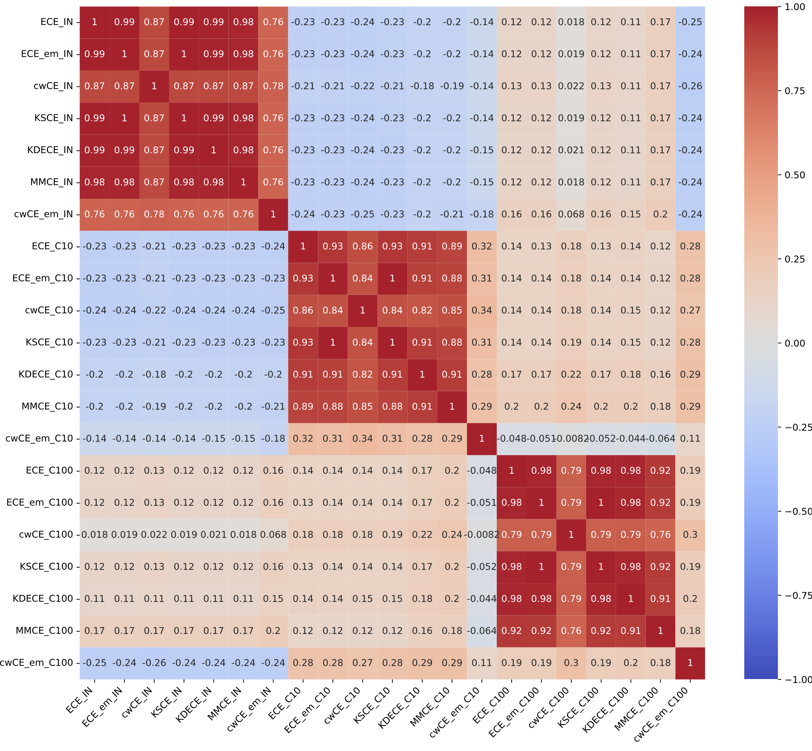
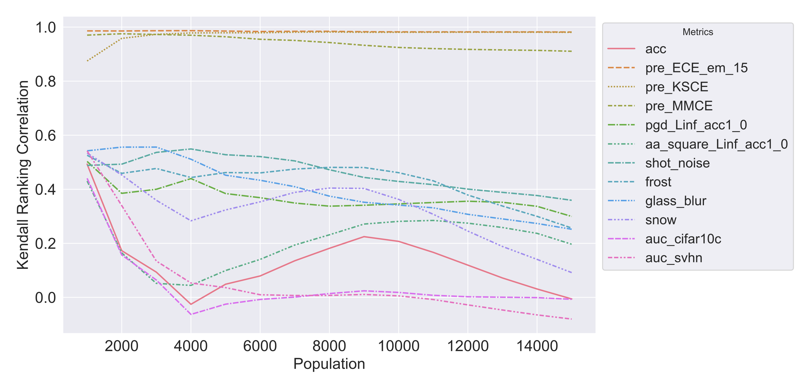
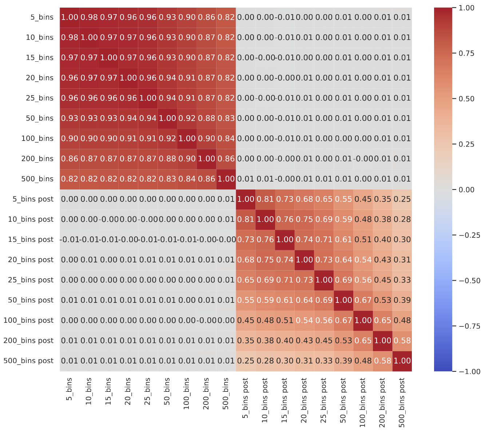
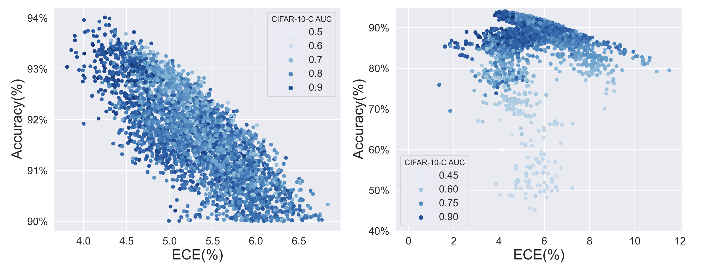
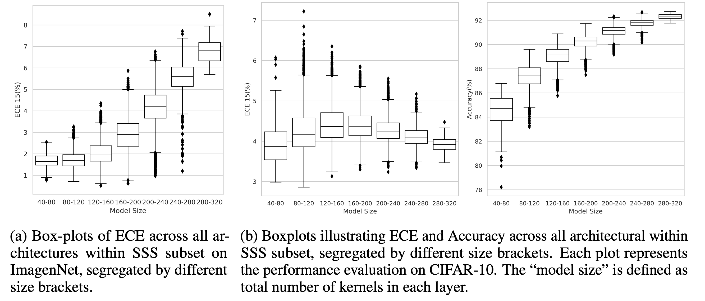
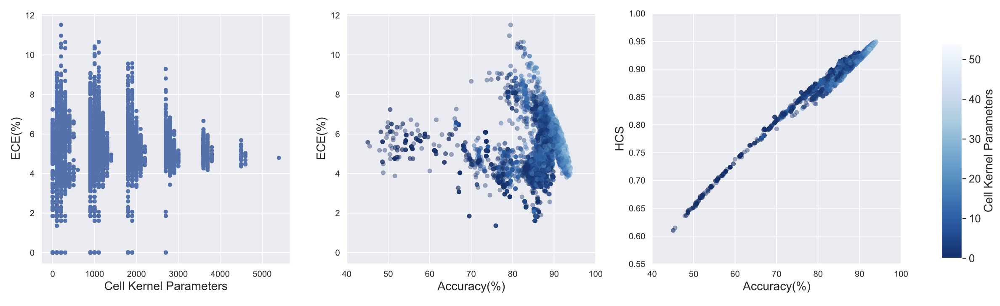
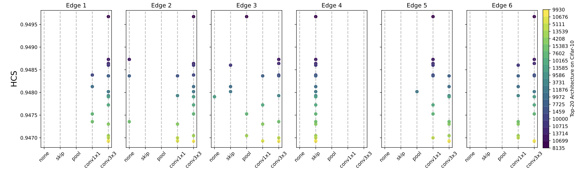

TL;DR: This research explore the property of calibration by analyzing 117,702 unique models and answering questions on calibration's generalizability, robustness and etc., providing a novel dataset for future studies.
Abstract
Deep neural networks are increasingly utilized in various machine learning tasks. However, as these models grow in complexity, they often face calibration issues, despite enhanced prediction accuracy. Many studies have endeavored to improve calibration performance through the use of specific loss functions, data preprocessing and training frameworks. Yet, investigations into calibration properties have been somewhat overlooked. Our study leverages the Neural Architecture Search (NAS) search space, offering an exhaustive model architecture space for thorough calibration properties exploration. We specifically create a model calibration dataset. This dataset evaluates 90 bin-based and 12 additional calibration measurements across 117,702 unique neural networks within the widely employed NATS-Bench search space. Our analysis aims to answer several longstanding questions in the field, using our proposed dataset:
(i) Can model calibration be generalized across different datasets?
(ii) Can robustness be used as a calibration measurement?
(iii) How reliable are calibration metrics?
(iv) Does a post-hoc calibration method affect all models uniformly?
(v) How does calibration interact with accuracy?
(vi) What is the impact of bin size on calibration measurement?
(vii) Which architectural designs are beneficial for calibration?
Additionally, our study bridges an existing gap by exploring calibration within NAS. By providing this dataset, we enable further research into NAS calibration. As far as we are aware, our research represents the first large-scale investigation into calibration properties and the premier study of calibration issues within NAS.
Can model calibration be generalized across different datasets?
Calibration performance can be measured not only by the robustness accuracy on the corruption dataset, but also by other robustness metrics only among models with high prediction accuracy
Kendall Ranking Correlation Matrix for the CIFAR-10, CIFAR-100, and the ImageNet16- 120 dataset with calibration metrics measured on TSS, filtered by top 100 accuracy.
Can robustness be used as a calibration measurement?
1. The calibration property of a certain architecture can not generalize well to different datasets.
2. Including AuC on OoD datasets in robustness metrics may not reliably measure calibration performance for models of varying prediction performance.
Kendall ranking correlation of various metrics against ECE different top-ranked model population.
How reliable are calibration metrics?
1. A consistent trend in the ranking of most calibration performance regardless of metric type.
2. Equal Mass classwise ECE may not be a reliable metric for calibration measurement.

Kendall ranking correlation between diverse calibration metrics. The metrics are evaluated across the entire set of TSS models. The analysis spans each of the CIFAR-10(left) and ImageNet(right).
Does a post-hoc calibration method affect all models uniformly?
Well-calibrated models do not necessarily exhibit better calibration performance after post-hoc calibration techniques.
Kendall Ranking Correlation Matrix of ECE using different bin size before and after temperature scaling on CIFAR-10.
How does calibration interact with accuracy?
The positive correlation between accuracy and calibration exists only among architectures with good prediction performance, challenging the previously hinted trade-off.
Scatter plots depict the ECE versus Accuracy of model with accuracy larger than 90\% (left) and all TSS models (right) on CIFAR-10. The color-coded markers represent CIFAR-10-C AUC scores.
What is the impact of bin size on calibration measurement?
1. The bin size has a more substantial impact on post-ECE.
2. It is recommended to assess post-hoc calibration performance across a range of bin sizes.

Explore the impact of bin size on calibration before and after temperature scaling.
Which architectural designs are beneficial for calibration?
1. The calibration performance may depend on both model size and dataset complexity.
2. Less parameters do not necessarily lead to better calibration performance.
3. Wider model can worsen calibration performance, especially when dealing with complex datasets.
Explore the impact of model size on calibration performance.

Calibration performance with cell kernel parameters. (Left) ECE distribution across different cell kernel parameters; (Middle) Scatter plot of all models on ECE and Accuracy; (Right): Scatter plot of all models on HCS and Accuracy.

ECE measured on CIFAR-10, CIFAR-100, and ImageNet datasets before and after applying temperature scaling. Marker size represents model size progression from 8:8:8:8:8, 16:16:16:16:16, up to 64:64:64:64:64, where number indicate the number of kernels in a certain layer.

Top 20 HCS architectures out of the topology search space according to the ECE on CIFAR-10 dataset.
Paper

A Benchmark Study on Calibration
Linwei Tao, Younan Zhu, Haolan Guo, Minjing Dong, Chang Xu
ICLR 2024
@misc{tao2023benchmark,
title={A Benchmark Study on Calibration},
author={Linwei Tao and Younan Zhu and Haolan Guo and Minjing Dong and Chang Xu},
year={2023},
eprint={2308.11838},
archivePrefix={arXiv},
primaryClass={cs.LG}
}Acknowledgement
This template was originally made by Phillip Isola and Richard Zhang for a colorful project, and inherits the modifications made by Jason Zhang and Elliott Wu.